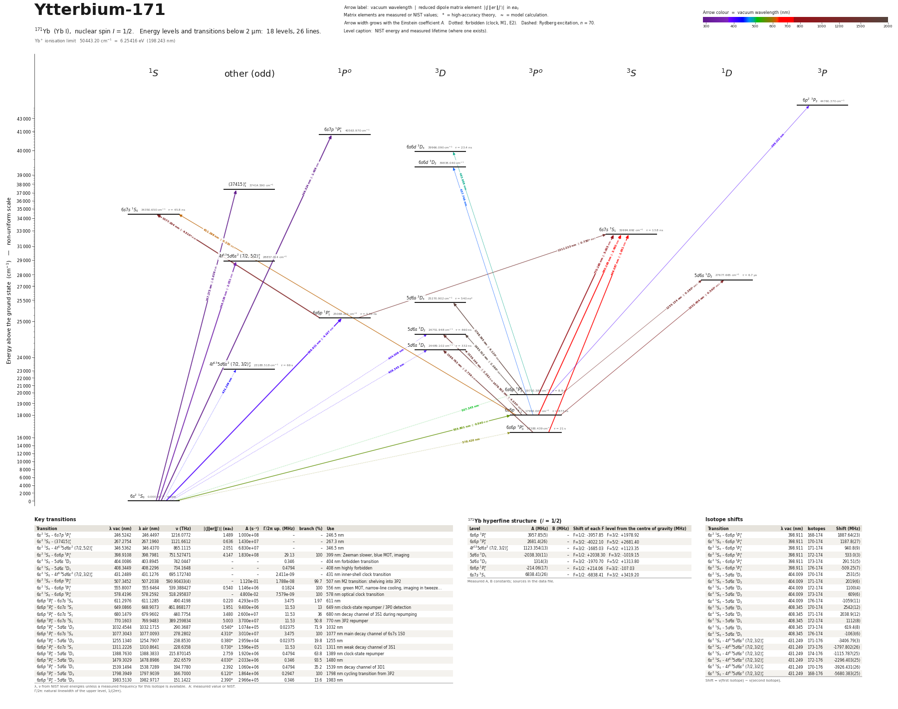

Ytterbium-171 energy level diagram
Energy levels and transitions of neutral 171Yb (Yb I, nuclear spin I = 1/2): 18 levels and 26 lines below 2 µm, each with its vacuum wavelength, frequency and, for 18 of them, the reduced dipole matrix element. Level energies come from the NIST Atomic Spectra Database; transition rates are 12 measured, 8 theory. Neutral ytterbium is also the starting point for loading Yb+ ion traps by photoionisation.
Hover a line or a level to isolate it, click to keep it selected. Scroll to zoom, drag to move.

Download: diagram (PDF) diagram (SVG) transitions (CSV) levels (CSV) source code

Key transitions of 171Yb
| Transition | λ vac (nm) | λ air (nm) | ν (THz) | |⟨J‖er‖J′⟩| (ea₀) | A (s⁻¹) | Γ/2π up. (MHz) | branch (%) | Use |
|---|---|---|---|---|---|---|---|---|
| 6s2 1S0 – 6s7p 1P°1 | 246.5242 | 246.4497 | 1216.0772 | 1.489 | 1.000e+08 | – | – | 246.5 nm |
| 6s2 1S0 – (37415)°1 | 267.2754 | 267.1960 | 1121.6612 | 0.636 | 1.430e+07 | – | – | 267.3 nm |
| 6s2 1S0 – 4f135d6s2 (7/2,5/2)°1 | 346.5362 | 346.4370 | 865.1115 | 2.051 | 6.830e+07 | – | – | 346.5 nm |
| 6s2 1S0 – 6s6p 1P°1 | 398.9108 | 398.7981 | 751.527471 | 4.147 | 1.830e+08 | 29.13 | 100 | 399 nm: Zeeman slower, blue MOT, imaging |
| 6s2 1S0 – 5d6s 3D2 | 404.0086 | 403.8945 | 742.0447 | – | – | 0.346 | – | 404 nm forbidden transition |
| 6s2 1S0 – 5d6s 3D1 | 408.3449 | 408.2296 | 734.1648 | – | – | 0.4794 | – | 408 nm highly forbidden |
| 6s2 1S0 – 4f135d6s2 (7/2,3/2)°2 | 431.2489 | 431.1276 | 695.172740 | – | – | 2.411e-09 | – | 431 nm inner-shell clock transition |
| 6s2 1S0 – 6s6p 3P°2 | 507.3452 | 507.2038 | 590.90433(4) | – | 1.120e-01 | 1.788e-08 | 99.7 | 507 nm M2 transition: shelving into 3P2 |
| 6s2 1S0 – 6s6p 3P°1 | 555.8007 | 555.6464 | 539.388427 | 0.540 | 1.146e+06 | 0.1824 | 100 | 556 nm: green MOT, narrow-line cooling, imaging in tweeze… |
| 6s2 1S0 – 6s6p 3P°0 | 578.4196 | 578.2592 | 518.295837 | – | 4.800e-02 | 7.579e-09 | 100 | 578 nm optical clock transition |
| 6s6p 3P°1 – 6s7s 1S0 | 611.2976 | 611.1285 | 490.4198 | 0.220 | 4.293e+05 | 3.475 | 1.97 | 611 nm |
| 6s6p 3P°0 – 6s7s 3S1 | 649.0866 | 648.9073 | 461.868177 | 1.951 | 9.400e+06 | 11.53 | 13 | 649 nm clock-state repumper / 3P0 detection |
| 6s6p 3P°1 – 6s7s 3S1 | 680.1479 | 679.9602 | 440.7754 | 3.480 | 2.600e+07 | 11.53 | 36 | 680 nm decay channel of 3S1 during repumping |
| 6s6p 3P°2 – 6s7s 3S1 | 770.1603 | 769.9483 | 389.259834 | 5.003 | 3.700e+07 | 11.53 | 50.8 | 770 nm 3P2 repumper |
| 6s6p 3P°1 – 5d6s 1D2 | 1032.4544 | 1032.1715 | 290.3687 | 0.540* | 1.074e+05 | 0.02375 | 71.9 | 1032 nm |
| 6s6p 1P°1 – 6s7s 1S0 | 1077.3043 | 1077.0093 | 278.2802 | 4.310* | 3.010e+07 | 3.475 | 100 | 1077 nm main decay channel of 6s7s 1S0 |
| 6s6p 3P°2 – 5d6s 1D2 | 1255.1340 | 1254.7907 | 238.8530 | 0.380* | 2.959e+04 | 0.02375 | 19.8 | 1255 nm |
| 6s6p 1P°1 – 6s7s 3S1 | 1311.2226 | 1310.8641 | 228.6358 | 0.730* | 1.596e+05 | 11.53 | 0.21 | 1311 nm weak decay channel of 3S1 |
| 6s6p 3P°0 – 5d6s 3D1 | 1388.7630 | 1388.3833 | 215.870145 | 2.759 | 1.920e+06 | 0.4794 | 63.8 | 1389 nm clock-state repumper |
| 6s6p 3P°1 – 5d6s 3D2 | 1479.3029 | 1478.8986 | 202.6579 | 4.030* | 2.033e+06 | 0.346 | 93.5 | 1480 nm |
| 6s6p 3P°1 – 5d6s 3D1 | 1539.1494 | 1538.7289 | 194.7780 | 2.392 | 1.060e+06 | 0.4794 | 35.2 | 1539 nm decay channel of 3D1 |
| 6s6p 3P°2 – 5d6s 3D3 | 1798.3949 | 1797.9039 | 166.7000 | 6.120* | 1.864e+06 | 0.2947 | 100 | 1798 nm cycling transition from 3P2 |
| 6s6p 3P°2 – 5d6s 3D2 | 1983.5130 | 1982.9717 | 151.1422 | 2.390* | 2.966e+05 | 0.346 | 13.6 | 1983 nm |
λ, ν from NIST level energies unless a measured frequency for this isotope is available. A: measured value or NIST. Γ/2π: natural linewidth of the upper level, 1/(2πτ).
171Yb hyperfine structure (I = 1/2)
| Level | A (MHz) | B (MHz) | Shift of each F level from the centre of gravity (MHz) |
|---|---|---|---|
| 6s6p 3P°1 | 3957.85(5) | – | F=1/2: -3957.85 F=3/2: +1978.92 |
| 6s6p 3P°2 | 2681.4(26) | – | F=3/2: -4022.10 F=5/2: +2681.40 |
| 4f135d6s2 (7/2,3/2)°2 | 1123.354(13) | – | F=3/2: -1685.03 F=5/2: +1123.35 |
| 5d6s 3D1 | -2038.30(11) | – | F=1/2: +2038.30 F=3/2: -1019.15 |
| 5d6s 3D2 | 1314(3) | – | F=3/2: -1970.70 F=5/2: +1313.80 |
| 6s6p 1P°1 | -214.06(17) | – | F=1/2: +214.06 F=3/2: -107.03 |
| 6s7s 3S1 | 6838.41(26) | – | F=1/2: -6838.41 F=3/2: +3419.20 |
Measured A, B constants; sources in the data file.
Isotope shifts
| Transition | λ vac (nm) | Isotopes | Shift (MHz) |
|---|---|---|---|
| 6s2 1S0 – 6s6p 1P°1 | 398.911 | 168-174 | 1887.64(23) |
| 6s2 1S0 – 6s6p 1P°1 | 398.911 | 170-174 | 1187.8(27) |
| 6s2 1S0 – 6s6p 1P°1 | 398.911 | 171-174 | 940.8(9) |
| 6s2 1S0 – 6s6p 1P°1 | 398.911 | 172-174 | 533.0(3) |
| 6s2 1S0 – 6s6p 1P°1 | 398.911 | 173-174 | 291.51(5) |
| 6s2 1S0 – 6s6p 1P°1 | 398.911 | 176-174 | -509.25(7) |
| 6s2 1S0 – 5d6s 3D2 | 404.009 | 170-174 | 2531(5) |
| 6s2 1S0 – 5d6s 3D2 | 404.009 | 171-174 | 2019(6) |
| 6s2 1S0 – 5d6s 3D2 | 404.009 | 172-174 | 1100(4) |
| 6s2 1S0 – 5d6s 3D2 | 404.009 | 173-174 | 609(6) |
| 6s2 1S0 – 5d6s 3D2 | 404.009 | 176-174 | -1059(11) |
| 6s2 1S0 – 5d6s 3D1 | 408.345 | 170-174 | 2542(12) |
| 6s2 1S0 – 5d6s 3D1 | 408.345 | 171-174 | 2038.9(12) |
| 6s2 1S0 – 5d6s 3D1 | 408.345 | 172-174 | 1112(8) |
| 6s2 1S0 – 5d6s 3D1 | 408.345 | 173-174 | 619.4(8) |
| 6s2 1S0 – 5d6s 3D1 | 408.345 | 176-174 | -1063(6) |
| 6s2 1S0 – 4f135d6s2 (7/2,3/2)°2 | 431.249 | 171-176 | -3406.79(3) |
| 6s2 1S0 – 4f135d6s2 (7/2,3/2)°2 | 431.249 | 173-176 | -1797.802(26) |
| 6s2 1S0 – 4f135d6s2 (7/2,3/2)°2 | 431.249 | 174-176 | -1115.787(25) |
| 6s2 1S0 – 4f135d6s2 (7/2,3/2)°2 | 431.249 | 172-176 | -2296.403(25) |
| 6s2 1S0 – 4f135d6s2 (7/2,3/2)°2 | 431.249 | 170-176 | -3926.431(26) |
| 6s2 1S0 – 4f135d6s2 (7/2,3/2)°2 | 431.249 | 168-176 | -5680.383(25) |
Shift = ν(first isotope) − ν(second isotope).
Closed and nearly closed transitions of 171Yb
| Transition | λ vacuum (nm) | Lower level | A (s⁻¹) | Leak per scattered photon | Photons before a leak | Where the leak goes |
|---|---|---|---|---|---|---|
| 6s2 1S0 → 6s6p 3P°1 | 555.8007 | ground | 1.146e+06 measured | closed | – | no other level can be reached by electric-dipole decay |
| 6s2 1S0 → 6s6p 1P°1 | 398.9108 | ground | 1.830e+08 measured | 6 × 10−8 from theory | 1.67 × 107 | 5d6s 3D1 5.23 × 10−8*; 5d6s 3D2 1.2 × 10−8* |
A transition is closed when its upper level can decay only to the level it was excited from, so the atom keeps scattering photons. “closed”: among the levels NIST lists, no other level below the upper level has the opposite parity and |ΔJ| ≤ 1, so no other electric-dipole decay exists. Otherwise the leak is the sum of the branching ratios of the other decay lines of the upper level (or 1 − branching ratio where that of the line itself has been measured), and the number of photons is 1 / leak. “≥” and “≤”: at least one possible decay path has no listed rate, so the leak is a lower limit. These numbers are derived from the branching ratios, lifetimes and rates of this page, not measured as such; the tag names the weakest of the inputs, * marks theory and ≈ a model or semi-empirical calculation. Listed: lines that start on the ground level or on a metastable level and leak at most 10 %, unless more than three possible decay paths have no listed rate. Fine-structure levels only: hyperfine and Zeeman dark states and forbidden decays without a listed rate are not considered. Select a line in the diagram for the full list of its leak channels.
All 171Yb transitions below 2 µm
| Lower level | Upper level | λ vacuum (nm) | λ air (nm) | ν (THz) | Type | |⟨J‖er‖J′⟩| (ea₀) | A (s⁻¹) | Branching (%) | Source of matrix element / A |
|---|---|---|---|---|---|---|---|---|---|
| 6s2 1S0 | 6s7p 1P°1 | 246.5242 | 246.4497 | 1216.0772 | E1 | 1.489 measured | 1.000e+08 measured | – | NIST ASD Yb I lines (local Yb_I_lines.tsv, tp_ref T7227 = D. C. Morton, Astrophys. J. Sup… |
| 6s2 1S0 | (37415)°1 | 267.2754 | 267.1960 | 1121.6612 | E1 | 0.636 measured | 1.430e+07 measured | – | NIST ASD Yb I lines (local Yb_I_lines.tsv, tp_ref T7227 = D. C. Morton, Astrophys. J. Sup… |
| 6s2 1S0 | 4f135d6s2 (7/2,5/2)°1 | 346.5362 | 346.4370 | 865.1115 | E1 | 2.051 measured | 6.830e+07 measured | – | NIST ASD Yb I lines (local Yb_I_lines.tsv, tp_ref T7227 = D. C. Morton, Astrophys. J. Sup… |
| 6s2 1S0 | 6s6p 1P°1 | 398.9108 | 398.7981 | 751.5275 | E1 | 4.147 measured | 1.830e+08 measured | 100 | 1/tau with tau = 5.464(11) ns (Takasu 2004 et al.), branching to 1S0 = 1 - 6(4)e-8; as ta… |
| 6s6p 3P°2 | 6p2 3P2 | 399.2019 | 399.0890 | 750.9796 | E1 | – | – | – | – |
| 6s2 1S0 | 5d6s 3D2 | 404.0086 | 403.8945 | 742.0447 | E2 | – | – | – | – |
| 6s2 1S0 | 5d6s 3D1 | 408.3449 | 408.2296 | 734.1648 | M1 | – | – | – | – |
| 6s2 1S0 | 4f135d6s2 (7/2,3/2)°2 | 431.2489 | 431.1276 | 695.1727 | clock | – | – | – | – |
| 6s6p 3P°1 | 6s6d 3D2 | 457.7490 | 457.6208 | 654.9276 | E1 | – | – | – | – |
| 6s6p 3P°2 | 6s6d 3D3 | 493.6881 | 493.5504 | 607.2507 | E1 | – | – | – | – |
| 6s2 1S0 | 6s6p 3P°2 | 507.3452 | 507.2038 | 590.9043 | clock | – | 1.120e-01 theory | 99.7 | 1/tau with the THEORETICAL tau ~ 8.9 s of Mishra and Balasubramanian (2001); as tabulated… |
| 6s2 1S0 | 6s6p 3P°1 | 555.8007 | 555.6464 | 539.3884 | E1 (intercombination) | 0.540 measured | 1.146e+06 measured | 100 | 1/tau with tau = 872.6(19) ns (weighted mean of 11 measurements); as tabulated in Kroeze,… |
| 6s2 1S0 | 6s6p 3P°0 | 578.4196 | 578.2592 | 518.2958 | clock | – | 4.800e-02 measured | 100 | 1/tau with tau = 21.0(18) s (Siegel 2024; Xu 2014); as tabulated in Kroeze, Kristensen, P… |
| 6s6p 3P°1 | 6s7s 1S0 | 611.2976 | 611.1285 | 490.4198 | E1 (intercombination) | 0.220 measured | 4.293e+05 measured | 1.97 | Bai and Mossberg, Phys. Rev. A 35, 619 (1987), as converted to a reduced matrix element a… |
| 6s6p 3P°0 | 6s7s 3S1 | 649.0866 | 648.9073 | 461.8682 | E1 | 1.951 measured | 9.400e+06 measured | 13 | partial decay rate = (theory branching 0.130(13)) / (measured tau = 13.8(17) ns); as tabu… |
| 6s6p 3P°1 | 6s7s 3S1 | 680.1479 | 679.9602 | 440.7754 | E1 | 3.480 measured | 2.600e+07 measured | 36 | 0.360 / 13.8 ns; as tabulated in Kroeze, Kristensen, Pucher, '171Yb Reference Data', arXi… |
| 6s6p 3P°2 | 6s7s 3S1 | 770.1603 | 769.9483 | 389.2598 | E1 | 5.003 measured | 3.700e+07 measured | 50.8 | partial decay rate = (theory branching 0.508(26)) / (measured tau = 13.8(17) ns); as tabu… |
| 6s6p 3P°1 | 5d6s 1D2 | 1032.4544 | 1032.1715 | 290.3687 | E1 (intercombination) | 0.540 theory | 1.074e+05 theory | 71.9 | Porsev, Rakhlina, Kozlov, Phys. Rev. A 60, 2781 (1999) [arXiv:physics/9903004], Table I |
| 6s6p 1P°1 | 6s7s 1S0 | 1077.3043 | 1077.0093 | 278.2802 | E1 | 4.310 theory | 3.010e+07 theory | 100 | Porsev, Rakhlina, Kozlov, Phys. Rev. A 60, 2781 (1999) [arXiv:physics/9903004], Table I |
| 6s6p 3P°2 | 5d6s 1D2 | 1255.1340 | 1254.7907 | 238.8530 | E1 (intercombination) | 0.380 theory | 2.959e+04 theory | 19.8 | Porsev, Rakhlina, Kozlov, Phys. Rev. A 60, 2781 (1999) [arXiv:physics/9903004], Table I |
| 6s6p 1P°1 | 6s7s 3S1 | 1311.2226 | 1310.8641 | 228.6358 | E1 (intercombination) | 0.730 theory | 1.596e+05 theory | 0.21 | Porsev, Rakhlina, Kozlov, Phys. Rev. A 60, 2781 (1999) [arXiv:physics/9903004], Table I |
| 6s6p 3P°0 | 5d6s 3D1 | 1388.7630 | 1388.3833 | 215.8701 | E1 | 2.759 measured | 1.920e+06 measured | 63.8 | partial decay rate = (theory branching 0.638(27)) / (measured tau = 332(11) ns); as tabul… |
| 6s6p 3P°1 | 5d6s 3D2 | 1479.3029 | 1478.8986 | 202.6579 | E1 | 4.030 theory | 2.033e+06 theory | 93.5 | Porsev, Rakhlina, Kozlov, Phys. Rev. A 60, 2781 (1999) [arXiv:physics/9903004], Table I |
| 6s6p 3P°1 | 5d6s 3D1 | 1539.1494 | 1538.7289 | 194.7780 | E1 | 2.392 measured | 1.060e+06 measured | 35.2 | 0.352 / 332 ns; as tabulated in Kroeze, Kristensen, Pucher, '171Yb Reference Data', arXiv… |
| 6s6p 3P°2 | 5d6s 3D3 | 1798.3949 | 1797.9039 | 166.7000 | E1 | 6.120 theory | 1.864e+06 theory | 100 | Porsev, Rakhlina, Kozlov, Phys. Rev. A 60, 2781 (1999) [arXiv:physics/9903004], Table I |
| 6s6p 3P°2 | 5d6s 3D2 | 1983.5130 | 1982.9717 | 151.1422 | E1 | 2.390 theory | 2.966e+05 theory | 13.6 | Porsev, Rakhlina, Kozlov, Phys. Rev. A 60, 2781 (1999) [arXiv:physics/9903004], Table I |
Reduced dipole matrix elements follow the convention A = ω³|d|²/(3πε₀ħc³(2J′+1)), with J′ the upper level. Tags show where a number comes from: measured, NIST compilation, high-accuracy theory, or a model calculation.
171Yb energy levels
Yb⁺ ionisation limit 50443.20 cm⁻¹ = 6.25416 eV (198.243 nm)
Sources
- 0.352 / 332 ns; as tabulated in Kroeze, Kristensen, Pucher, '171Yb Reference Data', arXiv…
- 0.360 / 13.8 ns; as tabulated in Kroeze, Kristensen, Pucher, '171Yb Reference Data', arXi…
- 1/tau with tau = 21.0(18) s (Siegel 2024; Xu 2014); as tabulated in Kroeze, Kristensen, P…
- 1/tau with tau = 5.464(11) ns (Takasu 2004 et al.), branching to 1S0 = 1 - 6(4)e-8; as ta…
- 1/tau with tau = 872.6(19) ns (weighted mean of 11 measurements); as tabulated in Kroeze,…
- 1/tau with the THEORETICAL tau ~ 8.9 s of Mishra and Balasubramanian (2001); as tabulated…
- A. Yamaguchi, PhD thesis, Kyoto University (2008): 1S0-3P0 frequency (Hoyt 2005) combined…
- Bai and Mossberg, Phys. Rev. A 35, 619 (1987), abstract (read via OpenAlex API record of …
- Bai and Mossberg, Phys. Rev. A 35, 619 (1987), as converted to a reduced matrix element a…
- Baumann, Braun, Gaiser, Liening, J. Phys. B 18, L601 (1985), abstract
- Bowers et al., Phys. Rev. A 53, 3103 (1996), Table I
- Bowers et al., Phys. Rev. A 59, 3513 (1999) and Toepper et al. (unpublished, as quoted by…
- CIPM 2021 recommended value: Margolis et al., Metrologia 61, 035005 (2024); as tabulated …
- Ishiyama, Ono et al., Nature Photonics (2026), arXiv:2505.04154v2, section 'Intrinsic lif…
- Kawasaki et al., Phys. Rev. A 107, L060801 (2023) [arXiv:2303.11665]
- Kawasaki et al., Phys. Rev. A 109, 062806 (2024) [arXiv:2402.13541v2], Table II
- Mishra and Balasubramanian, J. Quant. Spectrosc. Radiat. Transf. 69, 769 (2001); as tabul…
- NIST ASD Yb I lines (local Yb_I_lines.tsv, tp_ref T7227 = D. C. Morton, Astrophys. J. Sup…
- NIST ASD level energies
- Porsev, Rakhlina, Kozlov, Phys. Rev. A 60, 2781 (1999) [arXiv:physics/9903004], Table I
- Porsev, Rakhlina, Kozlov, Phys. Rev. A 60, 2781 (1999) [arXiv:physics/9903004], Table II
- Qiao et al., Results Phys. 48, 106439 (2023); Zhou et al., Phys. Rev. A 101, 062506 (2020…
- Qiao et al., Results Phys. 48, 106439 (2023); as tabulated in Kroeze, Kristensen, Pucher,…
- Zhao et al., Phys. Rev. A 110, 042816 (2024); Ai et al., Phys. Rev. A 107, 063107 (2023) …
- partial decay rate = (theory branching 0.130(13)) / (measured tau = 13.8(17) ns); as tabu…
- partial decay rate = (theory branching 0.508(26)) / (measured tau = 13.8(17) ns); as tabu…
- partial decay rate = (theory branching 0.638(27)) / (measured tau = 332(11) ns); as tabul…
- weighted mean (Birge ratio 1.0) of Zhao 2024, Ai 2023 (+erratum 2024), Beloy 2012, Bowers…
- weighted mean (Birge ratio 1.2) of Beloy 2012; Bowers 1996; Golub 1988; Gustavsson 1979; …
- weighted mean (Birge ratio 1.4) of Baumann et al., J. Phys. B 18, L601 (1985) and Lange, …
- weighted mean (Birge ratio 1.6) of Beloy et al. 2012 and Bowers et al. 1996; as tabulated…
- weighted mean (Birge ratio 2.3) dominated by Takasu et al., Phys. Rev. Lett. 93, 123202 (…
- weighted mean (Birge ratio 2.6) of 11 measurements incl. Jones 2023, Atkinson 2019, McFer…
- weighted mean (Birge ratio 2.9) of Jones et al., Appl. Opt. 62, 3932 (2023); Atkinson 201…
- weighted mean (Birge ratio 3.1) of Qiao 2023 (two papers), Zhou 2020, Wakui 2003, Berends…
- weighted mean (Birge ratio 3.3) of 11 measurements, dominated by Das et al. 2005; excludi…
- weighted mean (Birge ratio 6.3) of Lauprêtre 2020, Tanabe 2018, Kleinert 2016, Nizamani 2…
- weighted mean (Birge ratio 7.3) of Qiao 2023 (Results Phys. 48, 106439), Wakui 2003 (J. P…
- weighted mean of Siegel et al., Phys. Rev. Lett. 132, 133201 (2024) and Xu et al., Phys. …
Primary source: Kroeze, Kristensen, Pucher, '171Yb Reference Data', arXiv:2509.04416v1 (tables parsed from the arXiv HTML; a v2 exists and was not compared). Entries whose source ends with 'as tabulated in Kroeze...' are that paper's weighted means of the original references named (method 'compilation'); its quoted 'Birge ratio' > 1 means the inputs were mutually inconsistent and the uncertainty was inflated. FREQUENCIES: frequency_THz of the main lines refers to the hyperfine CENTRE OF GRAVITY of 171Yb, not to 174Yb and not to a specific F component; NIST level energies used as identifiers are natural-mixture values, so they differ from the 171Yb numbers at the 0.05 cm^-1 level. ISOTOPE SHIFTS are nu(first) - nu(second); values with "derived": true were computed here as differences of tabulated numbers (formula given in the entry's source) and are not printed in any paper. A_s: for 399, 556, 578 nm it equals 1/lifetime of the upper level (branching ~1). For 649, 770, 1389 nm it is the reference paper's 'partial decay rate' = theoretical branching ratio (from Porsev 1999 E1 amplitudes) divided by the measured lifetime, i.e. only semi-experimental. For 680 and 1539 nm the same product was formed here (flagged derived). reduced_matrix_element_au (extra field, units e*a0): convention A_ki = omega^3 |<i||er||k>|^2 / (3 pi eps0 hbar c^3 (2J_k+1)), with k the upper level. Values with method 'theory' are CI+MBPT results of Porsev et al. 1999 (accuracy 3-5% for large amplitudes, 15-2
Atoms with measured data
- Lithium-632 levels, 85 lines
- Lithium-732 levels, 85 lines
- Beryllium-917 levels, 26 lines
- Sodium-2336 levels, 106 lines
- Magnesium-2418 levels, 61 lines
- Magnesium-2518 levels, 61 lines
- Potassium-3934 levels, 84 lines
- Potassium-4034 levels, 84 lines
- Potassium-4134 levels, 84 lines
- Calcium-4035 levels, 61 lines
- Calcium-4335 levels, 61 lines
- Chromium-5256 levels, 87 lines
- Chromium-5356 levels, 87 lines
- Rubidium-8536 levels, 94 lines
- Rubidium-8736 levels, 94 lines
- Strontium-8440 levels, 70 lines
- Strontium-8640 levels, 70 lines
- Strontium-8740 levels, 70 lines
- Strontium-8840 levels, 70 lines
- Cadmium-11115 levels, 21 lines
- Cadmium-11315 levels, 21 lines
- Cadmium-11415 levels, 21 lines
- Caesium-13331 levels, 79 lines
- Barium-13744 levels, 89 lines
- Barium-13844 levels, 89 lines
- Dysprosium-16139 levels, 55 lines
- Dysprosium-16239 levels, 55 lines
- Dysprosium-16339 levels, 55 lines
- Dysprosium-16439 levels, 55 lines
- Erbium-16673 levels, 90 lines
- Erbium-16773 levels, 90 lines
- Erbium-16873 levels, 90 lines
- Thulium-16972 levels, 73 lines
- Ytterbium-17318 levels, 26 lines
- Ytterbium-17418 levels, 26 lines
- Mercury-19927 levels, 47 lines
- Mercury-20127 levels, 47 lines
- Mercury-20227 levels, 47 lines